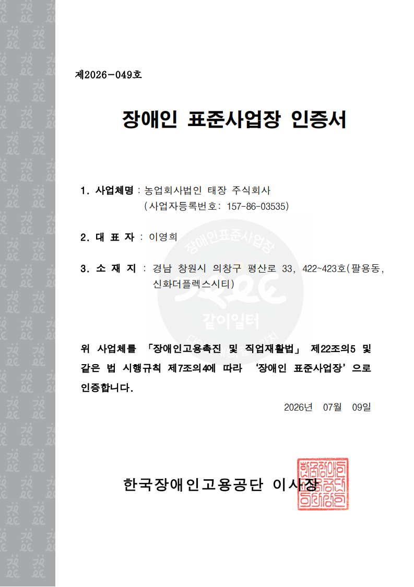
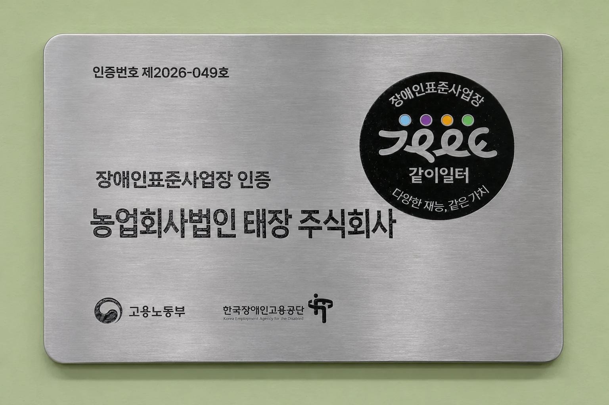
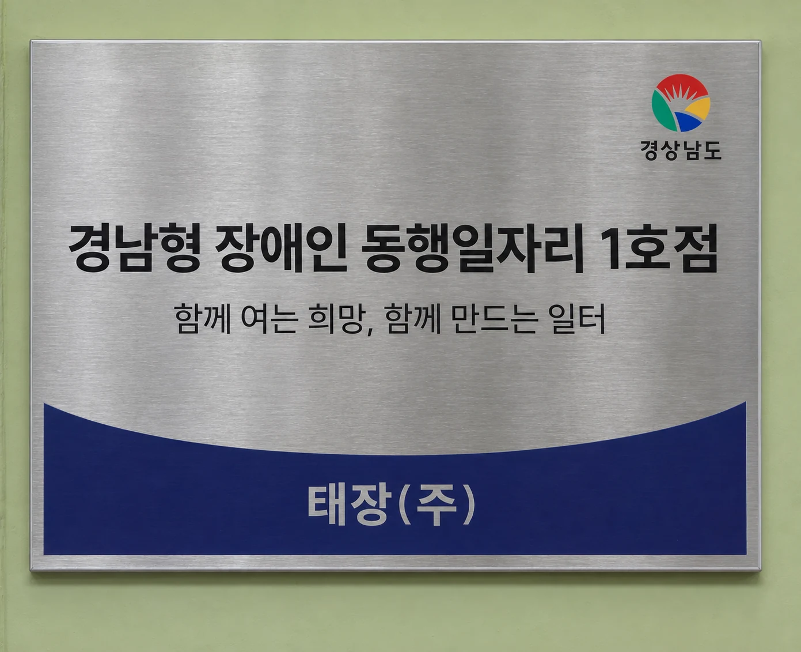
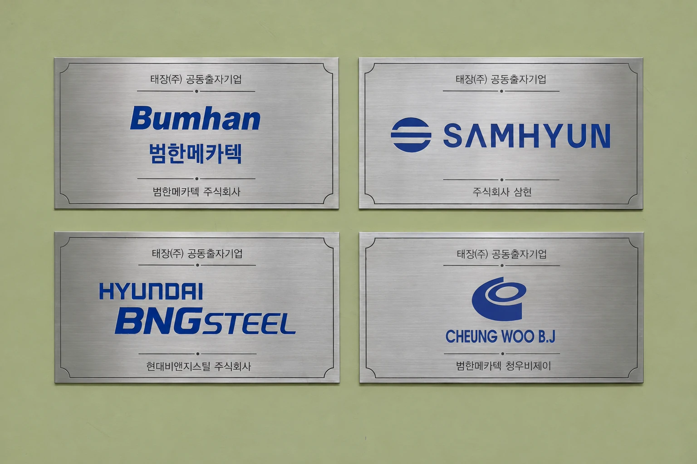

CREDENTIALS & PARTNERS
인증·지정 및 참여기업
함께 일하는 기반을,
확인할 수 있는 기록으로 소개합니다.
장애인 표준사업장 인증서부터 경남형 장애인 동행일자리 1호점 현판,
함께 출발한 참여기업까지 태장의 기반을 살펴보세요.
01 · CERTIFICATION
장애인 표준사업장 인증
안정적인 일터를 이어가기 위한 출발점입니다.
태장은 자회사형 장애인 표준사업장으로, 2026년 7월 9일 한국장애인고용공단의 장애인 표준사업장 인증을 받았습니다.
- 인증번호
- 제2026-049호
- 인증일
- 인증기관
- 한국장애인고용공단




02 · COMPANION JOBS
경남형 장애인
동행일자리 1호점
지역과 기업이 함께 만든 일터입니다.
태장은 경남형 장애인 동행일자리 제1호 사업장입니다. 장애인 근로자가 자신의 강점을 살려 오래 일할 수 있도록 직무와 일터를 만들어가고 있습니다.


03 · PARTICIPATING COMPANIES
함께 출발한 참여기업
네 기업이 태장의 고용과 사업 기반을 함께합니다.
범한메카텍, 삼현, 청우비제이, 현대비앤지스틸이 공동출자기업으로 참여하고 있습니다. 기업과의 협력을 바탕으로 지속 가능한 일자리를 이어갑니다.
- 범한메카텍
- 삼현
- 청우비제이
- 현대비앤지스틸

